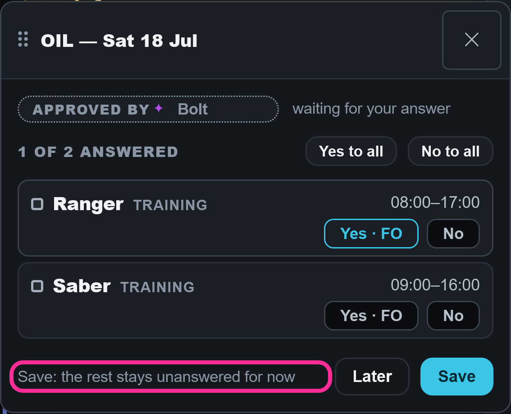
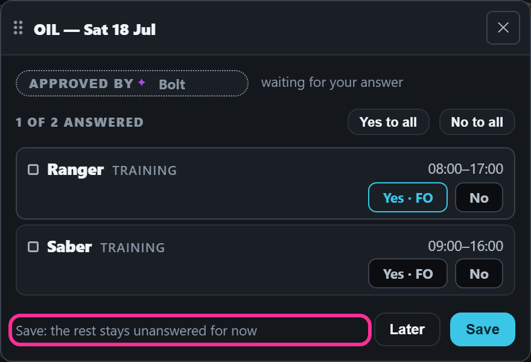

Look at now: the ringed line at the bottom of the OIL list. This is what you said yes to (your answer to question 1).
When it shows: Ace, Anvil and Basher have already signed by pressing Later. Bolt picks his name in APPROVED BY, the last of the four boxes. The list asks about Ranger's and Saber's Training. Bolt answers Ranger (Yes · FO) and leaves Saber blank. The line now reads "Save: the rest stays unanswered for now". Until this change it showed nothing there.
Nothing to decide unless it looks wrong. These are pictures of the real app on this job's build. Tap a picture to see it large.

